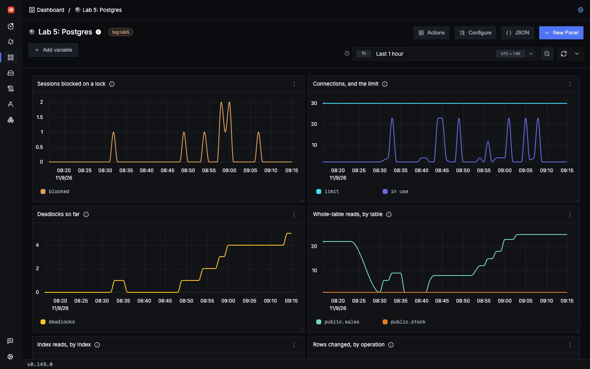

Lab 5: Postgres (optional)
Look inside Postgres
A trace shows that a query was slow. It can't show why. Postgres knows, and you can get that out of it with nothing running inside it.
Where this lab fits
This lab is optional, and Lab 6 doesn't need it. It has its own small app and its own Postgres, so Labs 1 and 2 stay as they are. Nothing runs inside this Postgres either: its settings make it report on itself.
| Part | In this lab |
|---|---|
lab5-app | A small shop with the same Python agent as Lab 1, and no OpenTelemetry code. It connects as an ordinary user, shop |
| Postgres | Reports on itself. Its settings turn on slow query logs, query plans and lock wait logs, and a monitoring user can read its statistics |
| Node agents | Read its log, one record per entry, with service.name = postgres |
| Cluster collector | Asks it for statistics every 10 seconds |
| SigNoz | Adds a dashboard, Lab 5: Postgres |
| Not in this lab | Alerts, and which queries are slowest over time. See Not covered |
Start it
Stop any load generator first, because this is a lot of work for a small machine. From the repo's root:
make lab5It took 142 seconds here the first time, and about a minute after that. It does these in order:
- Builds the app's image, and loads it into the cluster.
- Starts Postgres, which fills a table with 500,000 rows, and waits until it's ready.
- Adds
labs/lab5-postgres/k8s-infra-values.yamlto the collectors, which restarts them. - Starts the app, then proves that its spans, Postgres's statistics and Postgres's log all reach SigNoz.
- Creates the dashboard.
This lab has no load generator, because each scenario makes its own traffic. You can also fire them from its own page, lab5.localhost:8080.
Keep the steps apart. Our first version loaded 2 million rows while the collectors restarted, and that overloaded our 4-CPU machine. ClickHouse stopped answering, SigNoz's collectors got stuck, and no logs were written for 12 minutes, as gap 6 describes. That's why it's 500,000 rows now, and why the steps run one at a time.
Why a trace isn't enough
The agent in the app sees each query from the outside: its SQL, how long it took, and whether it failed. It can't see why. Only Postgres knows that it was waiting for a lock, or which plan it chose. It tells you in two ways, and neither needs anything running inside it:
| Signal | How it gets to SigNoz | What it answers |
|---|---|---|
| Its log | Postgres writes it, and the node agents read it | What happened to this statement: slow, its plan, waiting for a lock, a deadlock, a refused connection |
| Its statistics | The cluster collector logs in and asks | How much and how often: connections, deadlocks, sequential scans, blocked sessions |
The log
All of this is in the Postgres container's arguments:
labs/lab5-postgres/k8s/app.yaml lines 63–10663 # One JSON object per log entry, written to a file that postgres-log
64 # below prints. As plain text, a deadlock's detail and a query plan
65 # would each become many separate log lines.
66 - "-c"
67 - logging_collector=on
68 - "-c"
69 - log_destination=jsonlog
70 - "-c"
71 - log_directory=/var/log/postgresql
72 - "-c"
73 - log_filename=postgres
74 - "-c"
75 - log_file_mode=0644
76 # Slow queries: log any statement that takes longer than this, in ms.
77 - "-c"
78 - log_min_duration_statement=100
79 # And its plan, which says why it was slow. It costs little without
80 # auto_explain.log_analyze, which times every step of every query.
81 - "-c"
82 - shared_preload_libraries=auto_explain
83 - "-c"
84 - auto_explain.log_min_duration=100
85 # Lock waits: log any wait longer than deadlock_timeout, 1 second by default.
86 - "-c"
87 - log_lock_waits=on
88 # A query's values can be personal data, so leave them out of the logs.
89 # The third setting matters too: auto_explain logs them by default.
90 # A plan can still show one, in its Filter line, so treat plans as sensitive.
91 - "-c"
92 - log_parameter_max_length=0
93 - "-c"
94 - log_parameter_max_length_on_error=0
95 - "-c"
96 - auto_explain.log_parameter_max_length=0
97 # One process per scan. This VM is small, and a scan using three would
98 # slow down everything else on it, including ClickHouse.
99 - "-c"
100 - max_parallel_workers_per_gather=0
101 # Connections: low, so the scenario reaches the limit quickly. The 2
102 # reserved ones are for otel_monitor, on top of 3 for superusers.
103 - "-c"
104 - max_connections=30
105 - "-c"
106 - reserved_connections=2JSON matters more than it looks. In plain text, a deadlock's detail and a query plan each become many separate log lines. As JSON, each entry stays in one piece, and filelog/postgres turns it into one log record:
labs/lab5-postgres/k8s-infra-values.yaml lines 61–9361 # Postgres's log, one JSON object per entry, from the postgres-log container.
62 filelog/postgres:
63 include: [/var/log/pods/lab5_postgres-*/postgres-log/*.log]
64 include_file_name: false
65 start_at: end
66 operators:
67 # The container runtime writes each line as "<time> <stream> <tag> <line>".
68 - type: regex_parser
69 regex: '^\S+ (?P<stream>stdout|stderr) \S+ (?P<line>.*)$'
70 - { type: filter, expr: 'attributes.stream != "stdout"' }
71 - { type: move, from: attributes.line, to: body }
72 - { type: remove, field: attributes.stream }
73 - type: json_parser
74 parse_to: attributes.pg
75 timestamp: { parse_from: attributes.pg.timestamp, layout: '%Y-%m-%d %H:%M:%S.%L %Z' }
76 severity:
77 parse_from: attributes.pg.error_severity
78 mapping:
79 debug: [DEBUG, DEBUG1, DEBUG2, DEBUG3, DEBUG4, DEBUG5]
80 info: [LOG, INFO, NOTICE]
81 warn: WARNING
82 error: ERROR
83 fatal: [FATAL, PANIC]
84 # The body is what Postgres said. These are what you search and group on.
85 - { type: move, from: attributes.pg.state_code, to: 'attributes["postgres.state_code"]', if: 'attributes.pg.state_code != nil' }
86 - { type: move, from: attributes.pg.backend_type, to: 'attributes["postgres.backend_type"]', if: 'attributes.pg.backend_type != nil' }
87 - { type: move, from: attributes.pg.user, to: 'attributes["postgres.user"]', if: 'attributes.pg.user != nil' }
88 - { type: move, from: attributes.pg.detail, to: 'attributes["postgres.detail"]', if: 'attributes.pg.detail != nil' }
89 - { type: move, from: attributes.pg.statement, to: 'attributes["postgres.statement"]', if: 'attributes.pg.statement != nil' }
90 - { type: move, from: attributes.pg.message, to: body }
91 - { type: remove, field: attributes.pg }
92 - { type: add, field: 'resource["service.name"]', value: postgres }
93 - { type: add, field: 'resource["k8s.namespace.name"]', value: lab5 }| In SigNoz | What it holds |
|---|---|
body | What Postgres said |
postgres.detail | The explanation, such as which process holds a lock |
postgres.statement | The statement it was running |
postgres.state_code | The error code, such as 40P01 for a deadlock |
postgres.user, postgres.backend_type | Who, and which kind of process |
severity_text | From Postgres's own level, so FATAL and ERROR stay distinct |
Plans can show values. The settings above keep a query's parameters out of the log, but a plan can still include one in its filter. In this lab that's a made-up email address. On a real system, decide who can read these logs.
The statistics
The collector logs in as its own user, which can read statistics, and can't read or change your data:
labs/lab5-postgres/k8s/app.yaml lines 8–208 -- What SigNoz's collector logs in as. pg_monitor can read statistics, and
9 -- can't read or change your data.
10 CREATE ROLE otel_monitor LOGIN PASSWORD 'lab-monitor';
11 GRANT pg_monitor TO otel_monitor;
12 -- So it can still connect when the app has used every other connection.
13 GRANT pg_use_reserved_connections TO otel_monitor;
14 -- Don't log its own queries as slow when the machine is busy.
15 ALTER ROLE otel_monitor SET log_min_duration_statement = -1;
16 ALTER ROLE otel_monitor SET auto_explain.log_min_duration = -1;
17
18 -- What the app logs in as. The image's own user is a superuser, which can use
19 -- the connections reserved above, so the app needs an ordinary one.
20 CREATE ROLE shop LOGIN PASSWORD 'shop';Then two receivers in the one cluster collector, so nothing is collected twice, read them every 10 seconds:
labs/lab5-postgres/k8s-infra-values.yaml lines 20–4520 # The standard way: reads Postgres's statistics views as otel_monitor. It runs
21 # in the one cluster collector, so nothing is collected twice.
22 postgresql:
23 endpoint: postgres.lab5.svc.cluster.local:5432
24 transport: tcp
25 username: otel_monitor
26 password: ${env:POSTGRES_MONITOR_PASSWORD}
27 databases: [lab]
28 collection_interval: 10s
29 tls: { insecure: true }
30 metrics:
31 # These are off by default. So is postgresql.database.locks, which stays off:
32 # in this version it asks from the postgres database, and can only name tables
33 # there. Here that's never the app's tables, only the collector's own locks.
34 postgresql.deadlocks: { enabled: true }
35 postgresql.sequential_scans: { enabled: true }
36 # So nothing above says a session is stuck waiting for a lock. Ask for that directly.
37 sqlquery/postgres:
38 driver: postgres
39 datasource: "host=postgres.lab5.svc.cluster.local port=5432 user=otel_monitor password=${env:POSTGRES_MONITOR_PASSWORD} dbname=lab sslmode=disable"
40 collection_interval: 10s
41 max_open_conn: 1
42 queries:
43 - sql: "SELECT count(*) AS blocked FROM pg_stat_activity WHERE wait_event_type = 'Lock'"
44 metrics:
45 - { metric_name: postgres.sessions.blocked, value_column: blocked, value_type: int, data_type: gauge }| Metric | What it tells you | From |
|---|---|---|
postgres.sessions.blocked | Sessions stuck waiting for a lock right now | sqlquery |
postgresql.backends, postgresql.connection.max | Connections in use, and the limit | postgresql |
postgresql.deadlocks | Deadlocks so far. Off by default | postgresql |
postgresql.sequential_scans, postgresql.index.scans | Whole-table reads, and index use. The first is off by default | postgresql |
postgresql.operations, postgresql.rows, postgresql.table.size | Activity and size, for each table | postgresql |
The metric you'd reach for is no use here
The receiver has a lock metric, postgresql.database.locks, and SigNoz's guide turns it on. We tried it during a real lock wait, with two sessions fighting over a row in stock. stock never appeared. It listed only these: Query API only
relation mode
pg_class AccessShareLock
pg_class_oid_index AccessShareLock
pg_class_relname_nsp_index AccessShareLock
pg_class_tblspc_relfilenode_index AccessShareLock
pg_db_role_setting AccessShareLock
pg_locks AccessShareLockThose are the collector's own locks. In this version, v0.139.0, the receiver asks from a connection to the postgres database, and its query joins pg_class there, so it can only name tables in that database. Newer versions document a setting for this, but this one rejects it: the collector wouldn't start. So this lab leaves that metric off, and postgres.sessions.blocked does the job.
The dashboard
make lab5 creates Lab 5: Postgres, which charts the metrics above. It's our own, for two reasons. SigNoz publishes a Postgres dashboard in SigNoz/dashboards, and when we imported it, it opened empty, because its saved filters name one person's laptop (Srikanths-MacBook-Pro.local), someone else's tables and the postgres database. It also has no panel for blocked sessions, and its locks panel depends on the metric above. Seen in SigNoz UI

What it costs
| What | Measured here |
|---|---|
| Metric series | 59, from 22 metric names |
| Postgres's log when idle | 2 records every 5 minutes, from checkpoints |
| CPU, Postgres with its log reader, idle | About 25m, most of it answering the collector |
| Memory, the same pod | About 42 MiB, plus shared memory |
Per-table metrics multiply with the number of tables, so on a large database, limit databases and check what you get.
Not covered
- Which queries are slowest over time.
pg_stat_statementskeeps that, and the receiver can read it with its optionaldb.server.top_queryevents. The library is in this image, but it isn't loaded here. Untested - Going from a slow log line to its trace. SQLCommenter adds the trace ID to each query as a comment, with
PsycopgInstrumentor().instrument(enable_commenter=True). That's a code change, and it may clash with the agent's own instrumentation. Untested - Alerts on any of this. Lab 4 shows how.
Check yourself: Why does this lab turn on auto_explain as well as log_min_duration_statement?
Check yourself: Why is the collector's user allowed to use the reserved connections?